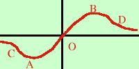

|
Determinare i punti di massimo, minimo e flesso orizzontale per la seguente funzione in tutto l'intervallo di definizione: x y = ----------- x2 + 1 L'intervallo di definizione e' tutto R Trovo la derivata prima e la pongo uguale a zero 1· (x2 + 1) - x·2x y' = ------------------------ (x2 + 1)2 1 - x2 y' = ----------- (x2 + 1)2 1 - x2 ------------- = 0 (x2 + 1)2 Una frazione e' zero quando e' zero il numeratore 1 - x2 = 0 x2 - 1 = 0 x2 = 1 x = ±1 Ho trovato due valori per cui potrei avere dei massimi, minimi o flessi Trovo i valori della y corrispondente sostituendo una volta +1 e l'altra -1 al posto di x nell'equazione di partenza
y(-1) = ----------- = -1/2 (-1)2 + 1 A(-1 , -1/2) B(1 , 1/2) Per sapere se sono un massimi, minimi o flessi conviene studiare la derivata prima perche' essendo il denominatore sempre positivo (quadrato di due termini positivi) bastera' studiarne il numeratore y' >0 1 - x2 > 0 x2 - 1 < 0 verificata per valori interni all'intervallo delle radici y' - - - - - - - - - -1 + + + + + + + +1 - - - - - - - y minimo Massimo Come completamento dell' esercizio, proviamo a trovare i flessi obliqui trovo la derivata seconda e la pongo uguale a zero (naturalmente se parti con l'intenzione di trovare i flessi per determinare i massimi e minimi conviene usare il metodo della derivata seconda) -2x·(x2 + 1)2 - (1 - x2)·2(x2 + 1)2x yII = ------------------------------------------- (x2 + 1)4 -2x·( 3 - x2) yII = --------------------- (x2 + 1)3 una frazione e' zero quando e' zero il numeratore, quindi: -2x·(3 - x2) = 0 quindi abbiamo x(3 - x2) = 0 abbiamo tre soluzioni: l'origine: O(0,0) ed i punti di ascisse x = ± invece di trovare la derivata terza mi conviene studiare la derivata seconda -2x·(3 - x2) yII = --------------------- > 0 (x2 + 1)3 essendo (x2 + 1) sempre positivo, lo studio del segno si riduce a -2x(3 - x2) > 0 cioe' la derivata seconda e' positiva quando quest'espressione e' positiva: pongo tutte le sue parti positive : l'espressione sara' verificata dove ottengo come prodotto il segno meno (essendovi un meno davati all'espressione) quindi x > 0 - - - - - - - - - - - - - - - - - - - - - 0 + + + + + + + + + + + + + + + + (3-x2)> 0 - - - - - - - - - - - Prodotto: + + + + + - - - - - - - - - + + + + + + + + - - - - - - - - - - l'espressione e' verificata dove il prodotto e' negativo (sempre per il segno meno davati al numeratore) cioe' la derivata seconda e' positiva negli intervalli  [ - quindi da meno infinito a - da - da zero a e da Quindi la funzione ha tre punti di flesso indicati in figura con i punti C O D |